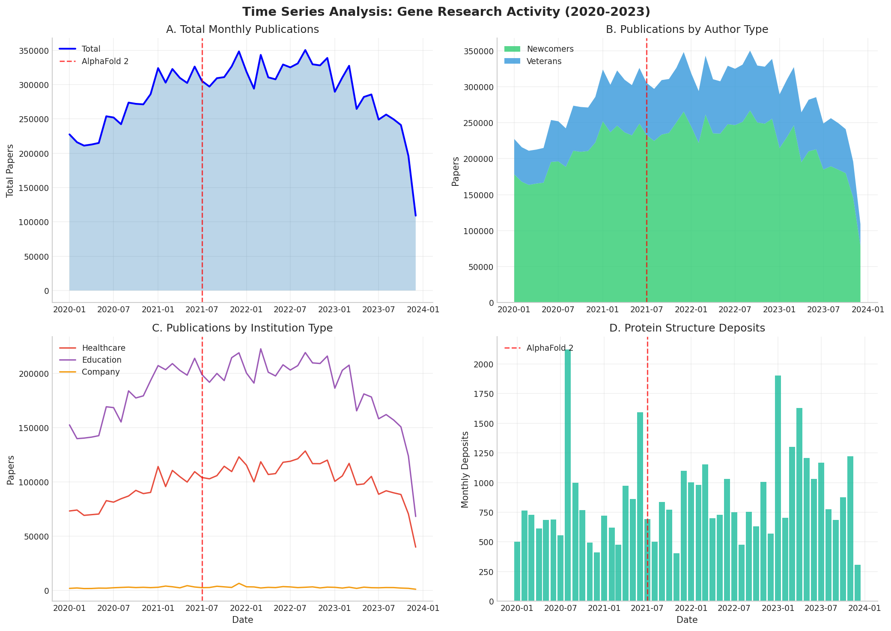
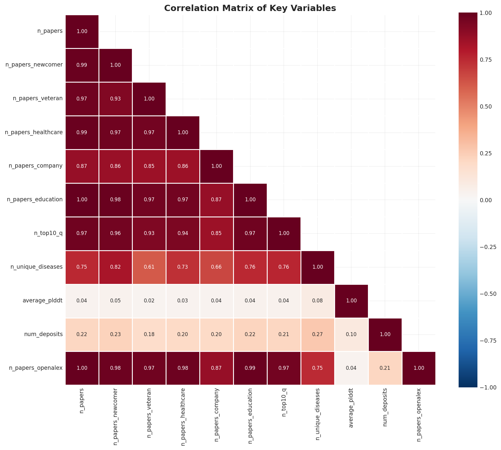
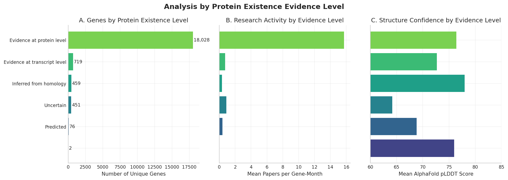
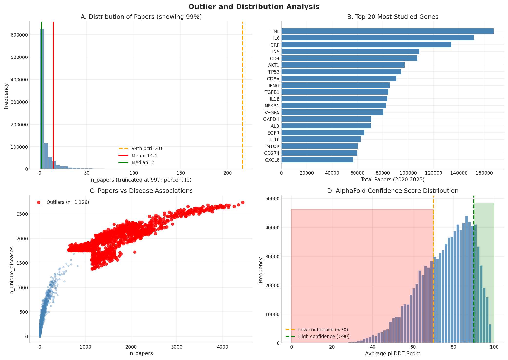
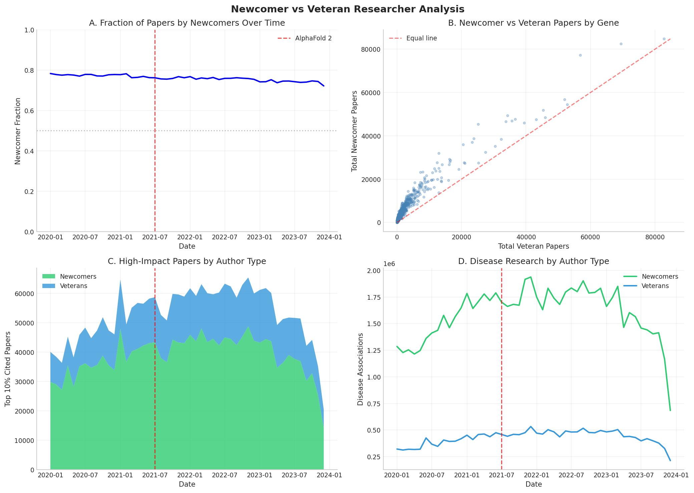
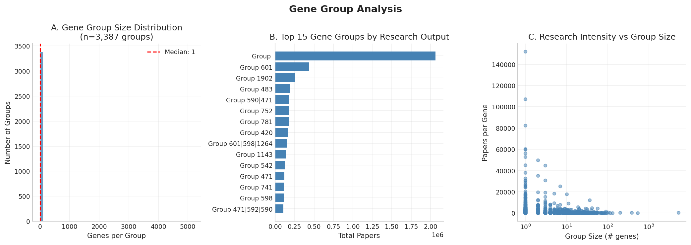
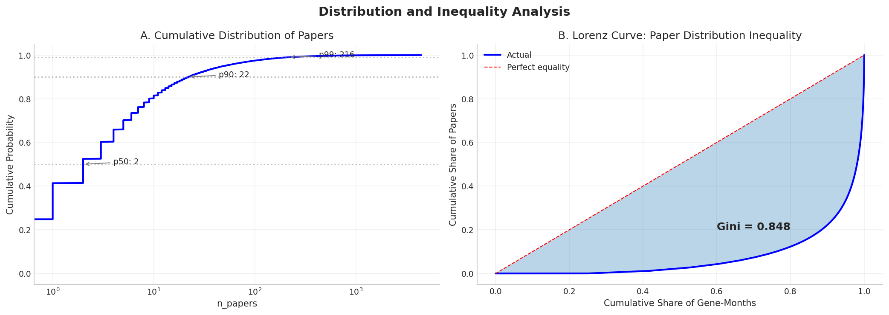

Gene Research Panel Data Analysis
Dataset: full_serialized_final_panel_with_openalex_counts.dta
Generated: 2025-12-12 16:20
949,824
Total Observations
1. Variable Distributions

Figure 1: Distributions of key variables (log-transformed where skewness > 2)
Key Finding: Most variables are highly right-skewed. The median gene-month has only 2 papers,
while the mean is 14.4, indicating a small number of genes receive disproportionate attention.
2. Time Series Analysis

Figure 2: Research activity over time with AlphaFold 2 release marked (July 2021)
3. Pre vs Post AlphaFold Comparison

Figure 3: Box plots comparing key metrics before and after AlphaFold 2 release
4. Correlation Analysis

Figure 4: Correlation matrix of key numeric variables
Key Finding: Strong correlations exist between total papers and papers by newcomers (r=0.98),
suggesting newcomers drive most research activity. Disease associations correlate moderately with paper counts.
5. Protein Existence Analysis

Figure 5: Research activity and structure quality by protein evidence level
6. Outlier Analysis

Figure 6: Distribution analysis with outliers and key genes identified
7. Newcomer vs Veteran Analysis

Figure 7: Comparison of research output by author experience level
Key Finding: Newcomers consistently produce ~75% of papers across the time period.
The newcomer fraction increased slightly after AlphaFold 2 release.
8. Gene Group Analysis

Figure 8: Analysis of gene functional groups
9. Bucket Analysis

Figure 9: Distribution of observations across meaningful buckets
10. Institution Type Analysis

Figure 10: Research output by institution type (Healthcare, Education, Company)
11. Inequality Analysis

Figure 11: Cumulative distribution and Lorenz curve showing research inequality
Key Finding: The Gini coefficient of 0.848 indicates high inequality in research attention.
The top 1% of gene-months account for a disproportionate share of all publications.
Summary Statistics
See full summary statistics table.